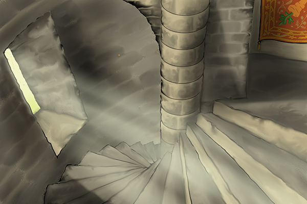

Crítica
Este es uno de los mejores cuentos de Allan Poe, lleno de misterio desde el principio, ambientado en una tarde muy alegre donde todos eran felices, Los hombres hablaban. Las mujeres gritaban. Los niños se atragantaban. Los cerdos silbaban. Los carros resonaban. Los toros bramaban. Las vacas mugían. Los caballos relinchaban. Los gatos maullaban. Los perros bailaban.O sea un lugar tan feliz como para que los perros bailen y los cerdos silven, es obvio que algo no andaba bien por ahí, lo más raro es que nadie mas que la protagonista lo notara, ni su amado Pompeyo o su perra Diana (bueno, aunque lo considerara raro la perra no podría decirlo). Pero bueno, volviendo al cuento, todos alguna vez sentimos deseos incontrolables de hacer algo y quien sabe si eso no es nuestro propio destino empujandonos a la fuerza a un evento inevitable. Si, así como a la chica de este cuento, el hecho que de la nada le dieran ganas de escalar una torra pues no es nada normal. Tambien hay que apreciar la fidelidad que le tuvieron sus amigos en ese momento al decidir acompañarla hasta la cima de la torre sabiendo cuan alta era, y sobre todo el esfuerzo de Pompeyo que incluso tuvo que cargarla para que pudiera apreciar la vista de la cuidad desde la torre, pobre, no lo hubiera hecho, no sabía que prácticamente la estaba mandando a morir. Pero siendo realistas, ¿quien va a saber que algo tan simple puede terminar en algo tan trágico?, (ahora que lo recuerdo es como la pelicula Final Destination). Volviendo al cuento, no imagino la desesperación que debió sentir la chica, primero al sentir si cabeza atorada en un agujero y segundo, comenzar a sentir como algo va cortando lentamente tu cuello, algo simplemente horrible, y peor cuando pides ayuda pero nadie te oye. Y como si eso no fuera suficiente, sentir como tus ojos se caen de tu rostro, ver con un ojo como el otro cae al vacio, simplemente horrible, indescriptible, pero debo aceptar que esta chica fue muy vailente ya que se quedó tranquila observando la cuidad desde aquella alta torre que le brindaba una hermosa vista, claro, por un tiempo porque al perder su otro ojo ya no pudo hacer más que pensar en su inevitable muerte, pero igual de una forma muy tranquila hasta que finalmente su cabeza fue cortada y cayó al vacio. He leído en algún lugar que cuando alguien es decapitado su cabeza aun tiene “vida” por unos cuantos segundos, para ella esos cuantos segundos debieron ser horribles, sentir como tu cabeza cae de un lugar tan alto, sinceramente es algo que a mi (y creo que a nadie) le gustaría vivir en sus ultimos momentos, aunque claro, uno no va a elegir como vivir su ultimo momento en este mundo pero pues algo tan desafortunado como lo de esta chica es demasiado cruel. Pero pensemos en Pompeyo, el horror que debió haber sentido al ver caer el cuerpo de su amada sin cabeza sobre él, personalmente habría hecho lo mismo que él, salir corriendo. Y sobre Diana, la pobre igual murió pero con la tranquilidad de haber obedecido a su dueña hasta el final, bueno, supongo que debió estar tranquila en cuando a eso. Ya para terminar, este cuento me pareció excelente, los detalles con los que se describen cada uno de los hechos es muy bueno, y si tienes una buena imaginación es aún mejor.